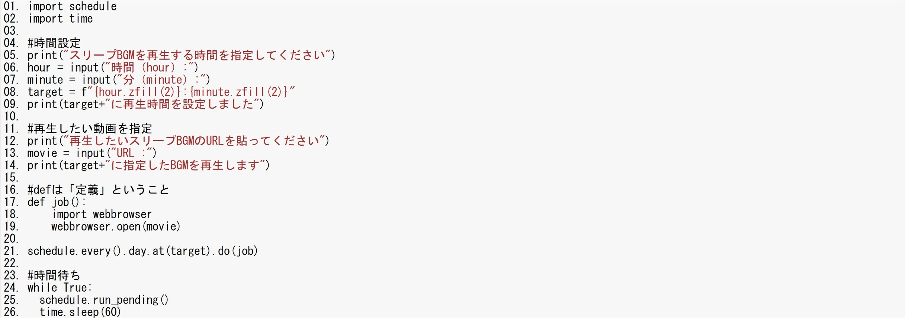

プログラミングを使った目覚まし
今回私たちの班は起きれない、急に眠くなる、急に目が覚めるといった「眠気」をプログラミングで解消していく。
↓↓今回作成したプログラミング↓↓

これを使うと自分の指定した動画を指定した時間に流せる。 眠くなる時間に目が覚める動画、変に目が覚める時間に眠くなる動画を流すことで「眠気」をコントロールして快適な生活を送ることができる。
参考サイト(※下のURLは全て外部サイト)
Python3で目覚ましを作る
Pythonの関数を指定時刻に実行する方法を現役エンジニアが解説【初心者向け】
python,VScodeで指定された時間にyoutubeの動画を自動再生したい。
Pythonでyoutubeを再生する
※これは同じ班員のサカグチさんのを共有させていただいたものです。